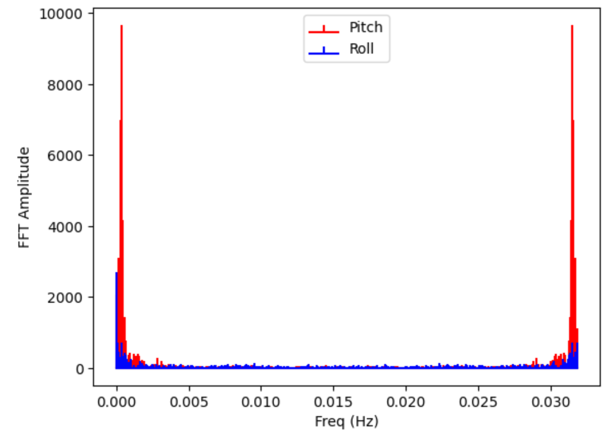
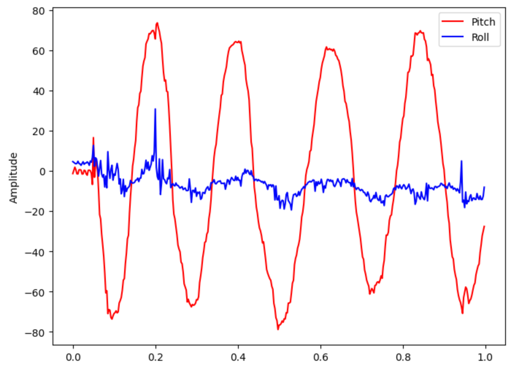
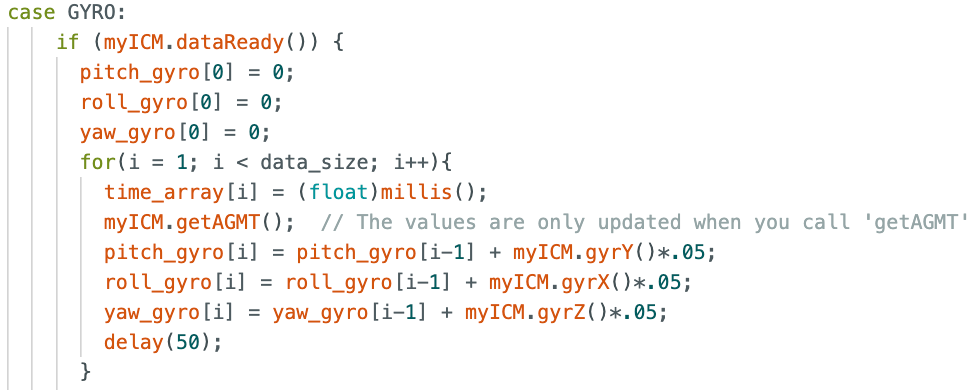
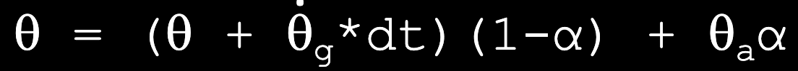
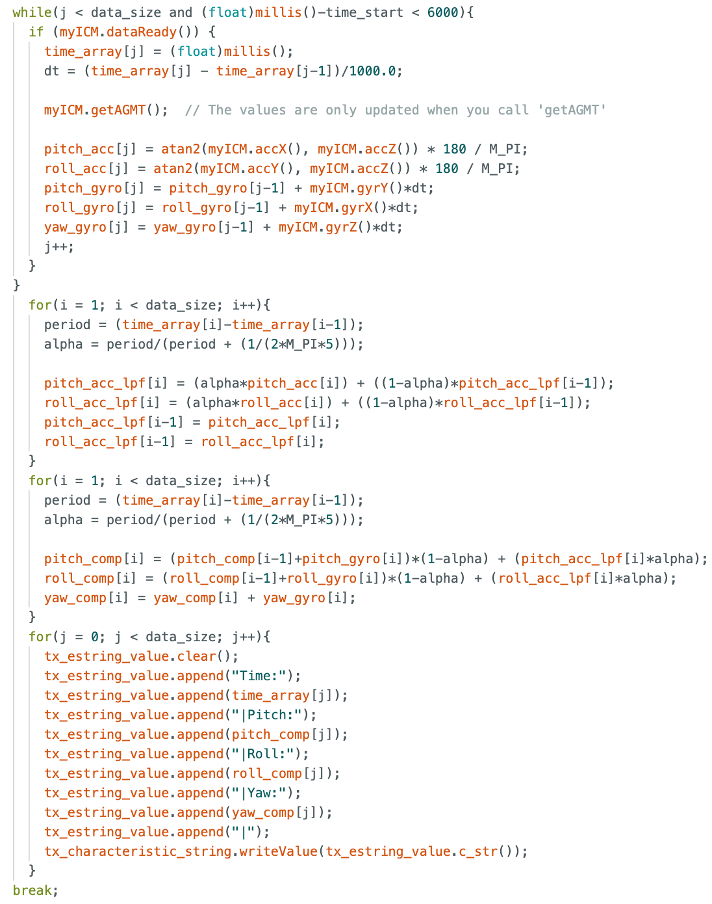

Lab 3
The purpose of this lab is to setup the two Time-of-Flight (TOF) sensors and begin to understand the libraries that control them. We learned basic soldering to connect our TOF sensors to our artemis and QWIIC Breakout board. Additionally, we are aiming to understand the sensitivity of the TOF sensor ranges, and we will discuss issues with TOF sensor placement.
Prelab
The TOF sensors are identical, and thus they have the same I2C address. This address is 0x52. However, we will need to find a solution to change one the sensor's address because two components cannot communicate with the same address without conflicting communication.
The prelab for this lab had us consider a few things regarding planning the wiring between each of the components as well as location of each component on the RC car. The wiring schematic is shown below. We are using 2 TOF sensors to gain information about the car's location and distance from potential obstacles. Our first TOF sensor wil face forward so we can detect obstacles in front of the vehicle. The second TOF sensor can be placed on the front, side, or rear of the vehicle. If the sensor is in the front with the first sensor, there will be intereference between the two sensors, and we will also need to rotate the car to see obstacles on the sides of the car. If we place the sensor on the rear, we will be able to gain information when the car is moving in reverse or is flipped over, yet this still leaves blind spots on the side of the car. For these reasons, I will choose to put the second TOF sensor on the side of the car.

Task 1: Connecting TOF Sensor to QWICC Breakout
The wires from the QWIIC connector were cut, stripped, and soldered to the corresponding pins on the TOF sensor. Then, the other side of the QWIIC connector was connected to the breakout board and connected to the Artemis via a smaller QWIIC connector. A picture of the two TOF sensors properly hooked up as well as one of them wired with an XSHUT wire is shown below.

Task 2: Scanning for I2C Device
As mentioned in the prelab, we expect the I2C address to be 0x52. However., while scanning the I2C channel, it was found that the actual address is 0x29. While this might seem incorret, the last bit is used as the read/write bit. This means that they share the same bits except for the last bit changing between 0 and 1 (change of 23).

Task 3: Testing TOF Sensor Short Mode
 
Task 4: Two TOF Sensors

Task 4: TOF Sensor Speed

Task 5: TOF Time v. Distance Analysis

Additional Task 1: Infrared Discussion
Additional Task 2: Sensititvity to Colors and Textures
Lab 3 Takeaways